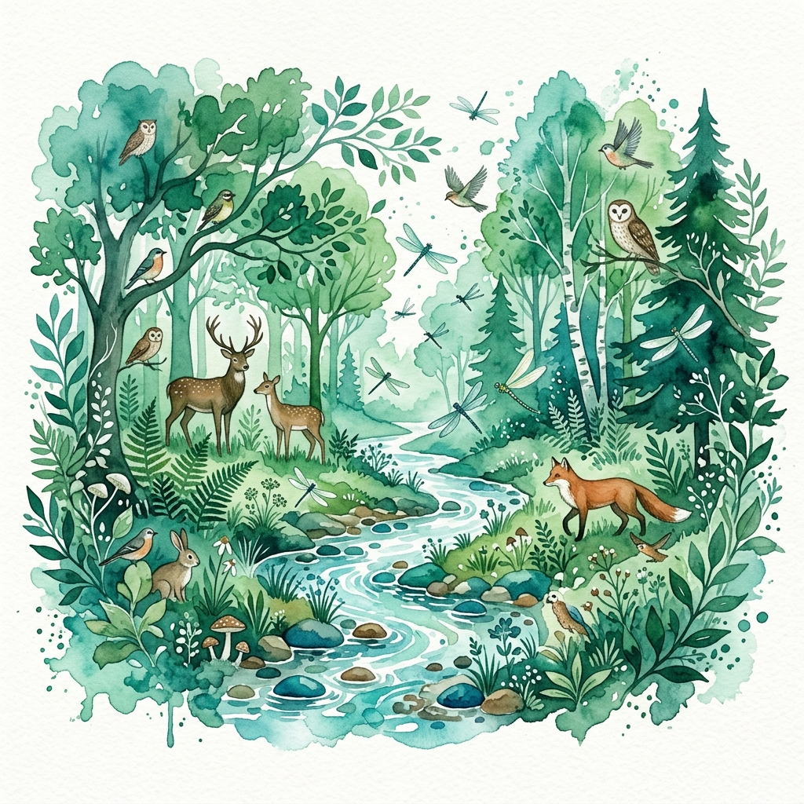

Environmental Scientist

I am a versatile and analytical Undergraduate pursuing a Bachelor of Science (Biological Sciences) at the Faculty of Applied Science, Rajarata University of Sri Lanka.
With a diverse background covering Environmental Impact Assessment, Advanced Chemistry, and Biological Field Research, I am a strong communicator skilled in technical report writing and bilingual scientific translation. I am deeply committed to applying evidence-based solutions to environmental and scientific challenges.
A multidisciplinary skill set built through academic study, field research, and professional experience.
Planning, organizing, and overseeing multi-departmental research projects from inception to completion.
Applying statistical methods and data analysis techniques to biological and environmental research datasets.
Conducting biodiversity surveys, habitat assessments, and ecological fieldwork in diverse environments.
Understanding regulatory frameworks and applying environmental policies to real-world scenarios.
Crafting clear, precise technical reports, research papers, and bilingual scientific translations.
Studying animal behavior, habitat conservation, and species diversity through rigorous field observation.
Leading teams, managing cross-departmental workflows, and driving initiatives with strong communication skills.
Professional roles and leadership positions that have shaped my career in environmental science.
Led a comprehensive research project focusing on the variation in species diversity and habitat partitioning of dragonflies in selected areas of the Mihintale Sanctuary, as well as the behavioral patterns of peacocks. Acted as team leader, managing the distribution of tasks across departments and facilitating communication among team members to meet tight deadlines. Coordinated fieldwork logistics, data collection protocols, and ensured research integrity throughout the project lifecycle.
Serving as a Member of the Board of Directors for the Rajarata University ZeroPlastic team. Responsible for event management, logistics, and operations, driving campus-wide sustainability campaigns and coordinating volunteer efforts for environmental awareness programs. Contributing to strategic planning and organizational growth of the team.
Managed daily store operations at the Ratmalana branch, overseeing inventory management, staff coordination, and customer service. Developed strong organizational and leadership skills in a fast-paced retail environment, ensuring smooth operations and meeting performance targets.
Academic journey from school to university, building a strong foundation in the sciences.
Active participation in sports, university tournaments, and campus life.
Member of the university Carrom team and crowned Champion at the Faculty Board Tournament (2023), demonstrating focus, dedication, and strategic sportsmanship.
I'm always interested in new opportunities, collaborations, and conversations about environmental science and research. Feel free to reach out!